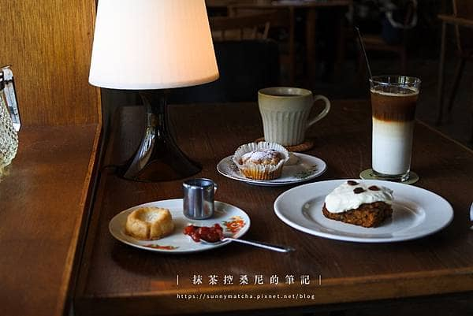

首頁
猻物咖啡Akau Coffee
海珈琲 海とコーヒー
心得感想

龜時間 goöod time
「千年龜，萬年鶴」是古時候流傳的吉祥象徵，意謂著長壽平安。
能夠直接聽在地人說故事，對當地生活的樣貌有更立體的認識。
龜時間的菜單帶有時節流動性，充滿南國土地孕育的鮮爽滋味，
像是耐心等待薑片發酵，製作成辛香清爽的薑汁蘇打；
生薑紅蘿蔔蛋糕抹上馬斯卡澎起司鮮奶油，
香氣輕盈、口感細膩；苦甜的摩卡奶酪放上酸甜芒果丁，是屬於大人的點心。